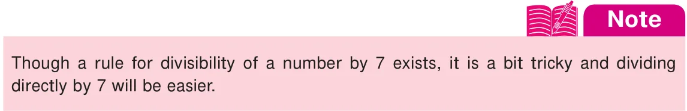

Suppose that, you are asked to simplify a fraction say \(\frac{126}{216}\) . Since the numbers are relatively bigger, the task is not easy. Observe that, these numbers are not only divisible by 2 and 9 exactly but by other numbers too! How do we know that 2 and 9 are factors of 126 and 216? We are going to see divisibility tests in this section which are rules, that will improve your mental math skills for such determinations.
Divisibility tests, in common, are useful in the prime factorisation of a number. Also, it is fun to find whether any large number is exactly divisible by 2, 3, 4, 5, 6, 7, 8, 9, 10 or 11 (and more...) by simply observing, examining and performing basic operations with the digits of the given number and not by doing the actual division! Curious to know? Then, remember the following interesting rules and have fun...! As divisibility by 2, 3 and 5 gain importance in the prime factorisation of a number, we will define the rules for them first!
Divisibility by 2
A number is divisible by 2, if its ones place is any one of the numbers 0, 2, 4, 6 or 8.
Examples:
- 456368 is divisible by 2, since its ones place is 8.
- 1234567 is not divisible by 2, since its ones place (7) is not even.
Divisibility by 3
Divisibility of a number by 3 is interesting! We can find that 96 is divisible by 3. Here, note that the sum of its digits \(9+6 = 15\) is also divisible by 3. Even \(1+5 = 6\) is also divisible by 3. This is called as iterative or repeated addition. So,
A number is divisible by 3 if the sum of its digits is divisible by 3.
Examples:
- 654321 is divisible by 3.
Here \(6+5+4+3+2+1= 21\) and 2+1=3 is divisible by 3. Hence, 654321 is divisible by 3.
- The sum of any three consecutive numbers is divisible by 3. (For example: 33+34+35=102, is divisible by 3)
- 107 is not divisible by 3 since 1+0+7=8, is not divisible by 3.
Divisibility by 5
Observe the multiples of 5. They are 5, 10, 15, 20, 25,.., 95, 100, 105, …., and keeps on going. It is clear, that multiples of 5 end either with 0 or 5 and so,
A number is divisible by 5 if its ones place is either 0 or 5.
Examples: 5225 and 280 are divisible by 5
Try these
- Are the leap years divisible by 2?
- Is the first 4 digit number divisible by 3?
- Is your date of birth (DDMMYYYY) divisible by 3?
- Check whether the sum of 5 consecutive numbers is divisible by 5.
- Identify the numbers in the sequence 2000, 2006, 2010, 2015, 2019, 2025 that
are divisible by both 2 and 5.
Divisibility by 4
A number is divisible by 4 if the last two digits of the given number is divisible by 4.
Note that if the last two digits of a number are zeros, then also it is divisible by 4. Examples: 71628, 492, 2900 are divisible by 4, because 28 and 92 are divisible by 4 and 2900 is also divisible by 4 as it last 2 digits are zero.
Divisibility by 6
A number is divisible by 6 if it is divisible by both 2 and 3.
Examples: 138, 3246, 6552 and 65784 are divisible by 6.

Divisibility by 8
A number is divisible by 8 if the last three digits of the given number is divisible by 8.
Note that if the last three digits of a number are zeros, then also it is divisible by 8. Examples: 2992 is divisible by 8 as 992 is divisible by 8 and 3000 is divisible by 8 as its last three digits are zero.
Divisibility by 9
A number is divisible by 9 if the sum of its digits is divisible by 9. Note that the numbers divisible by 9 are also divisible by 3.
Examples: 9567 is divisible by 9 as 9+5+6+7=27 is divisible by 9.
Divisibility by 10
A number is divisible by 10 if its ones place is only zero. Observe that numbers divisible by 10 are also divisible by 5.
Examples:
- 2020 is divisible by \(10 (2020 \div 10 = 202)\) where as 2021 is not divisible by 10.
- 26011950 is divisible by 10 and hence divisible by 5.
Divisibility by 11
A number is divisible by 11 if the difference between the sum of alternative digits of the number is either 0 or divisible by 11.
Examples: Consider the number 256795. Here, the difference between the sum of alternative digits \(= (2+6+9\) ) \(- (5+7+5)=17 - 17=0\). Hence, 256795 is divisible by 11. Activity The teacher may ask all the students to check mentally for divisibility by 2, 3, 4, 5, 6, 8, 9, 10 and 11. If divisible, let them write 'yes', otherwise 'no'(the first one is done for you!).
Number \(\div 2 \div 3 \div 4 \div 5 \div 6 \div 8 \div 9 \div 10 \div 11\)
68 yes no yes no no no no no no 99 300 495 1260 7920 11880 13650 600600 15081947